How do you gain weight quickly and safely?
Doctors usually recommend gaining weight to people who consistently weigh too little, which can cause a range of health problems. Bodybuilders and other athletes may also hope to gain weight by building muscle. While gaining weight can be a struggle, this article will provide you a list of some food items which can also increase muscle and boost overall health.
If you have a body mass index (BMI) of 18.5 or less, you may be underweight. Low body weight
can be caused by a number of factors including illness, genetics, medication, mental health conditions, or
high levels of physical activity.Whether you've experienced some unexpected weight loss or your
doctor is recommending that you gain weight, it may be time to make some dietary changes.
Following a weight gaining diet increases your daily calorie intake to put on more weight. The easiest
way to increase calories is by eating foods that are energy-dense, which means they're high in calories.
A person who is underweight is likely to experience health issues, including:
- Infertility
- Developmental delays
- A weakened immune system
- An increased risk of complication during surgery
- Malnutrition
While gaining weight can be a struggle, the following foods may help. They can also increase
muscle and boost overall health.
Foods to gain weight quickly
The following nutrient-rich foods can help a person to gain weight safely and effectively.
1.Milk

Click on the image to read more
Milk offers a mix of fat, carbohydrates, and proteins.
It is also an excellent source of vitamins and minerals, including calcium.
The protein content of milk makes it a good choice for people trying to build muscle
One study found that after a resistance training workout, drinking skim milk helped to
build muscle more effectively than a soy-based product.
A similar study involving women
in resistance training showed improved results in those who drank milk following a workout.
2. Rice
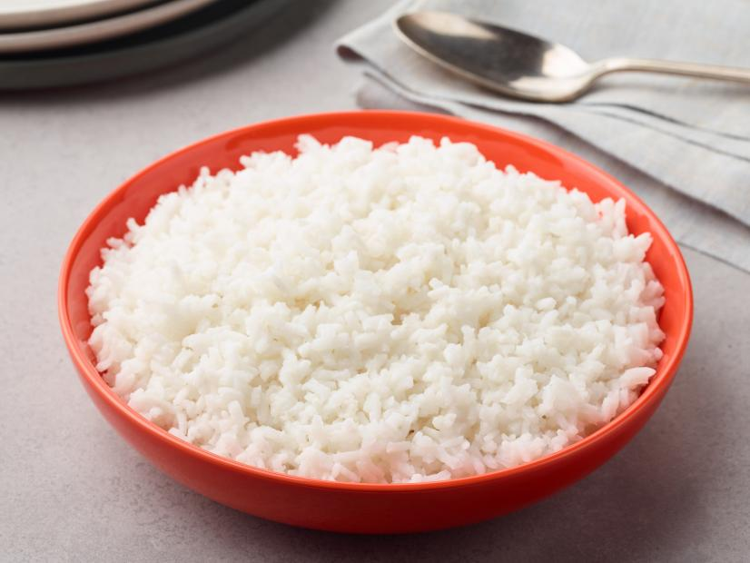
A cup of rice contains about 200 calories, and it is also a good source of carbohydrates,
which
contribute to weight gain. Many people find it easy to incorporate rice into meals
containing
proteins and vegetables.
3. Red Meat
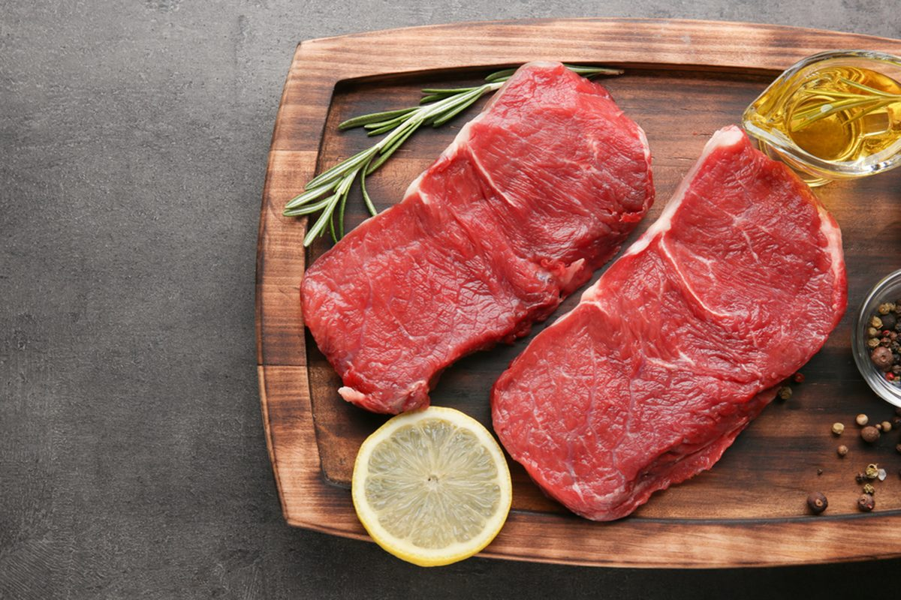
Consuming red meat has been shown to help with building muscle and gaining weight
Steak contains both leucine and creatine, nutrients that play a significant role in boosting
muscle mass. Steak and other red meats contain both protein and fat, which promote weight
gain.
While a person is advised to limit their intake, leaner cuts of red meat are healthier for
the heart than fattier cuts.
One study found that adding lean red meat to the diets of 100 women aged 60–90 helped
them to gain weight and increase strength by 18 percent while undergoing resistance training.
4. Eggs

Eggs are a good source of protein, healthy fat, and other nutrients. Most nutrients are
contained in the yolk.
In fact, eggs are pretty much the perfect food. They contain a little bit of almost every
nutrient you need.
5. Cheese
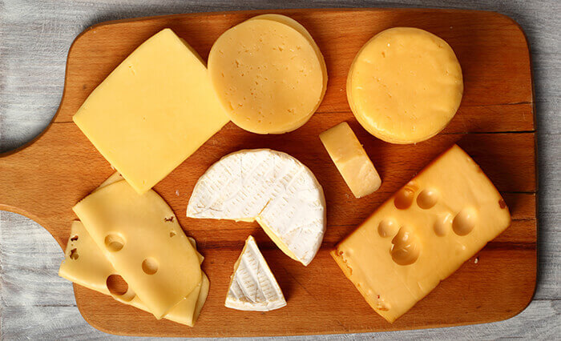
Cheese is a great source of calcium, fat, and protein. It also contains high amounts of
vitamins A and B-12, along with zinc, phosphorus, and riboflavin.
Cheese made from the milk of 100 percent grass-fed animals is the highest in nutrients and
also contains omega-3 fatty acids and vitamin K-2.
6. Yoghurt
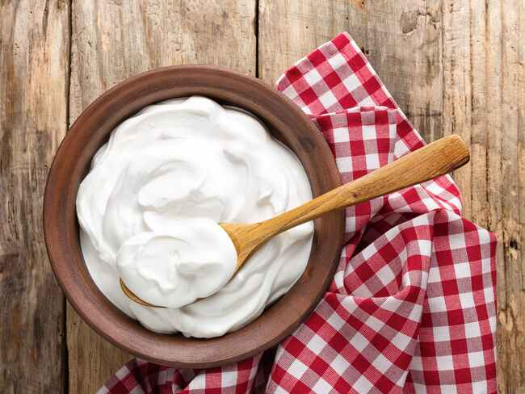
Yogurt is a popular dairy product that’s made by the bacterial fermentation of milk.
The bacteria used to make yogurt are called “yogurt cultures,” which ferment lactose,
the natural sugar found in milk. This process produces lactic acid, a substance that causes
milk proteins to curdle, giving yogurt its unique flavor and texture.
Full-fat yogurt can also provide protein and nutrients. Avoid flavored yogurts and those with
lower fat contents, as they often contain added sugars.
A person may wish to flavor their yogurt with fruit or nuts
7. Whole Grain Cereals
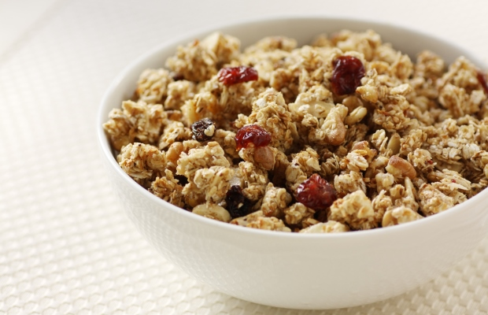
Cereal is an extremely popular breakfast food.
It is easy and convenient for those who live busy lifestyles, but is often loaded with added
sugar and other unhealthy ingredients. These should be avoided.
Many cereals are fortified
with vitamins and minerals.
Select cereals that contain whole grains and nuts. These contain
healthy levels of carbohydrates and calories, as well as nutrients such as fiber and antioxidants.
8. Dark Chocolate
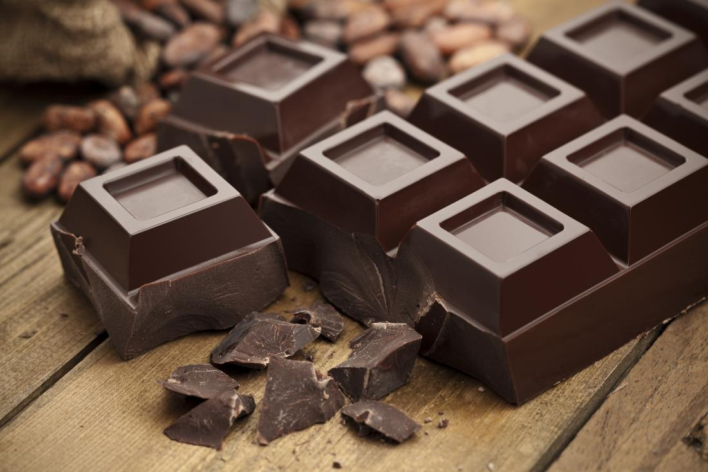
Dark chocolate is loaded with nutrients that can positively affect your health and is a high
fat, high-calorie food.
Made from the seed of the cacao tree, it is one of the best sources of antioxidants on the
planet.
Studies show that dark chocolate (not the sugary crap) can improve your health and
lower the risk of heart disease.
A person looking to gain weight should select chocolate that has a cacao content of at least
70 percent.
Benefits of gaining weight
Safety
If you need to gain weight, a nutritious weight gaining diet is a safe way to do it. This diet provides
for added calories without artificial supplements or extra sugar, sodium, and unhealthy fats.
Flexibility
Within the parameters of nutrient-rich foods, this diet allows for plenty of free choice in what to eat.
If you hate salmon, you never have to eat it. Substitute shrimp or chicken. If you dislike cooked
spinach, eat it raw or try a different leafy green instead. Sweets and treats are not banned—they
are just not recommended as the main strategy for gaining weight.
Sustainibility
If your body continues to need the extra calories, you can keep following a weight gaining diet
indefinitely. Conversely, if you reach a weight-gain goal, you can slowly cut back on calories
(say, by eliminating a snack or decreasing portion size) in order to find the balance that works
for you.
Drawbacks of gaining weight
Inconvenience
This method of adding healthy calories to gain weight requires planning, shopping, and cooking.
It's not as easy as simply adding a daily scoop of ice cream or bag of potato chips to your typical
menu.
Battling Your Appetite
If you need to gain weight because you have a low appetite (perhaps due to a medication you are
taking), it may be a challenge to eat more food. It can be very difficult to eat when you do not feel
hungry.
Is a Weight Gaining Diet a Healthy Choice for You?
A weight gaining diet is very similar to a healthy weight loss diet. In both cases, you will eat foods
that are rich in nutrients and not eliminate major food groups. You will avoid "empty calorie" foods
(junk foods that contain sugar, salt, and fat, but few other nutrients). The main difference between
the two diet approaches is in the number of calories you consume.
The 2020-2025 USDA Dietary Guidelines state that an individual's daily calorie allowance varies
based on their current weight, age, sex, health, and activity level.
Often, a 2,000-calorie diet is used as an average. Adding about 500 calories per day to this daily
level can help you gain a pound or so per week. This type of gradual change is best. Use this
calculator to help you set a daily calorie goal.
Written by Arpita Singh on
March 1,2021
Table of Contents
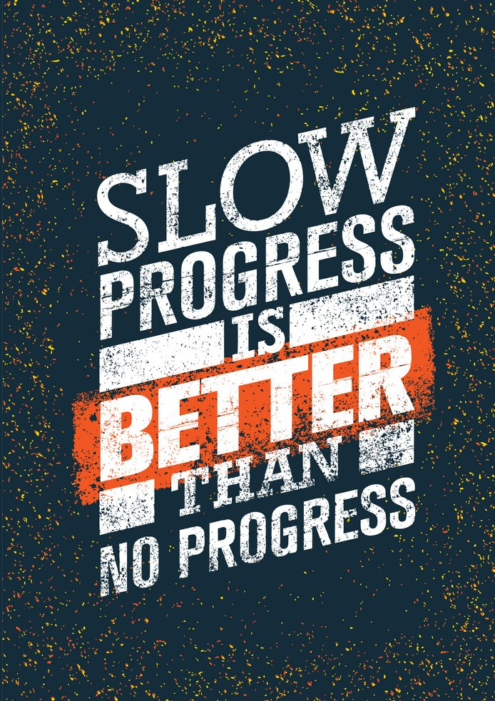
See related posts
Gain weight by trying out these workouts at your home
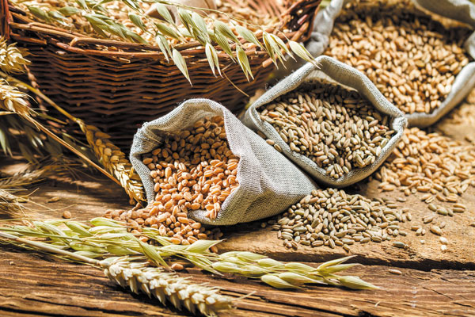
The 15 healthiest Cereals you can eat
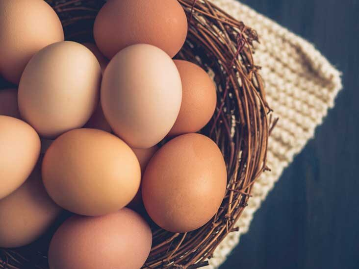
Eating eggs doesn't affect cholesterol in the blood
for majority of people.
Read More
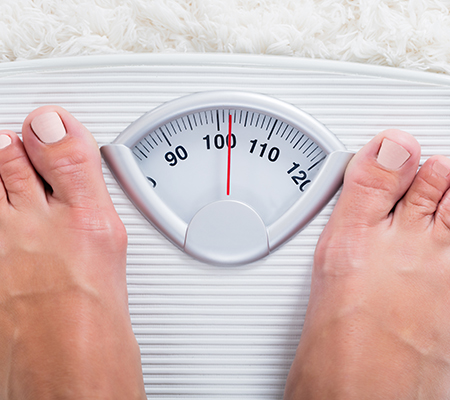
Underweight health risks:What you should
know
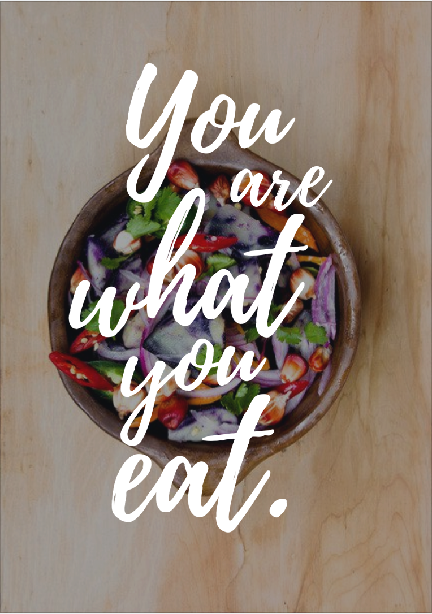